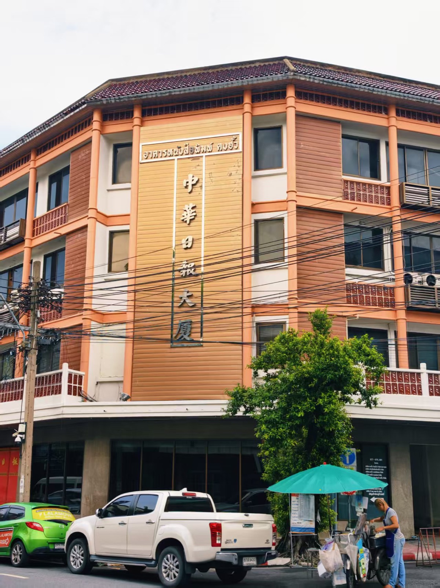
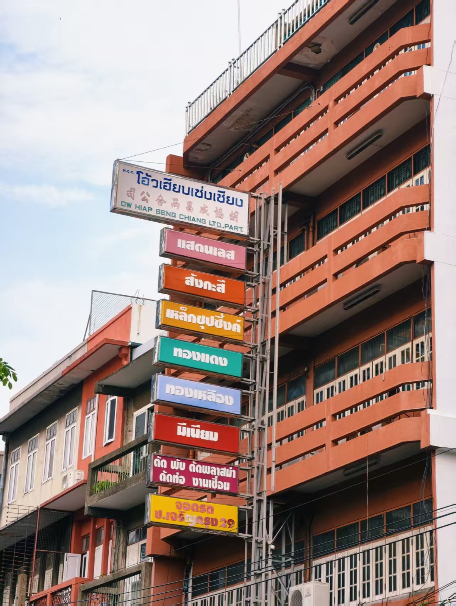
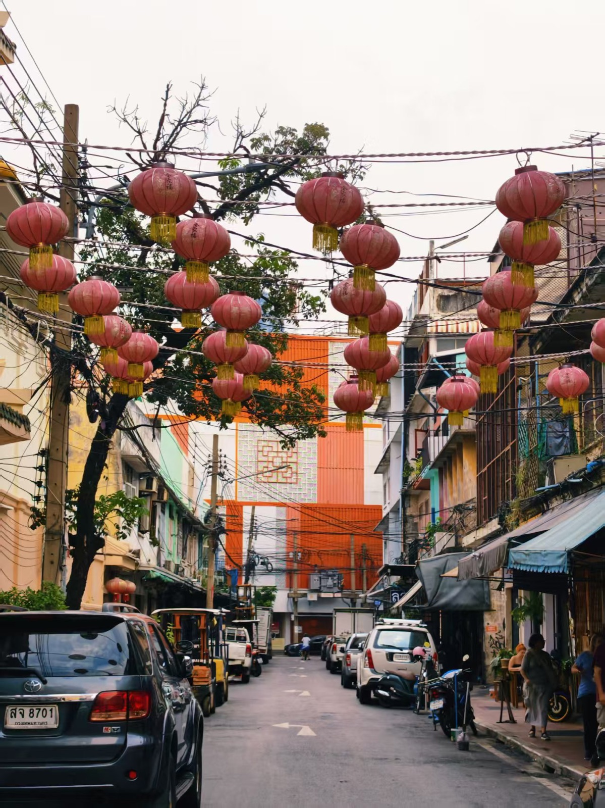
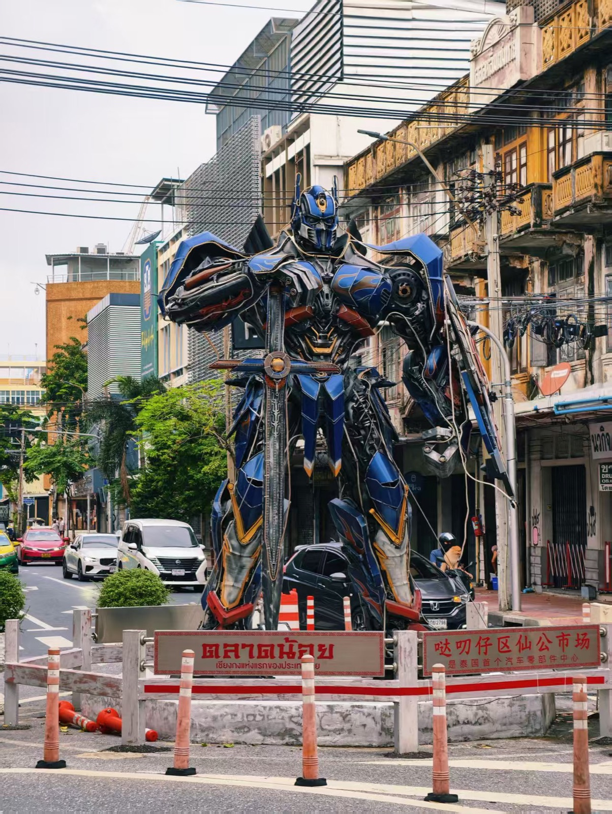
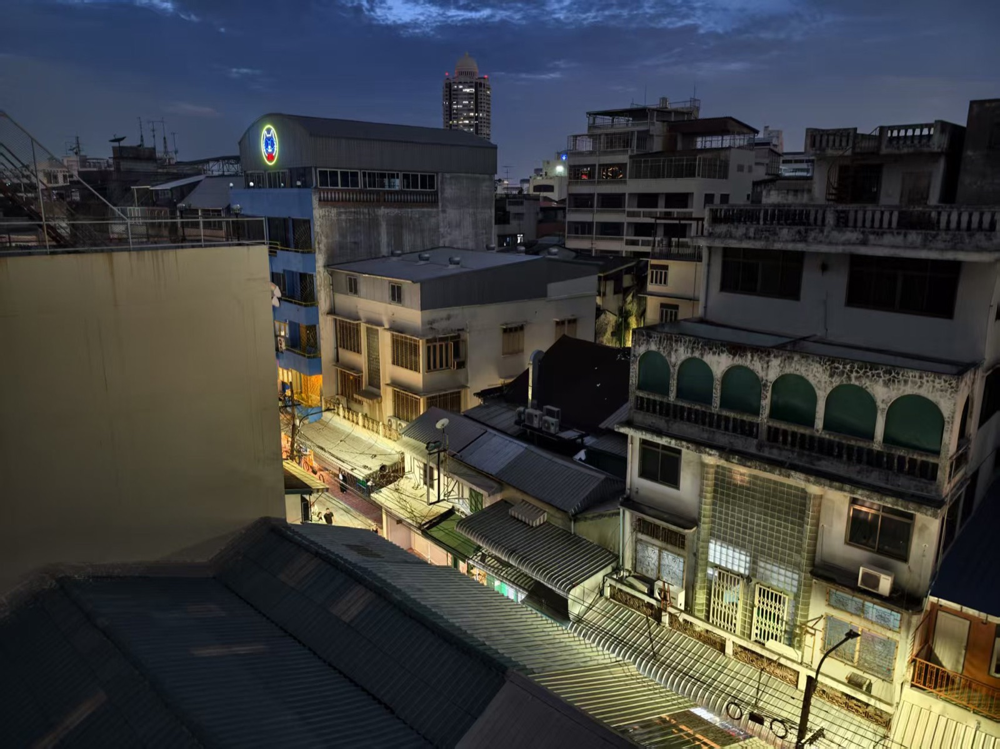

唐人街
这一天在唐人街，从白天逛到了天黑。沿街有不少潮汕风格的旧楼，墙皮斑驳，招牌和电线挤在楼外。路上车很多，摩托车从汽车之间穿过去，路边也一直有人经过。

中华日报大厦就在街边，中文店名从上往下写，上面还有一行泰文。再往前走，看到一栋橙色旧楼，侧面挂满了彩色招牌。这里的颜色确实鲜艳，中文、泰文和英文常常出现在同一块牌子上。


拐进一条小巷，头顶挂满了红灯笼，有些已经褪色。两边是旧房子和小店，路边停着车，白天看起来就是一条很日常的街。

街口立着一尊用汽车零件拼成的擎天柱。栏杆上的牌子写着「哒叻仔仙公市场」，下面还注明这里是泰国首个汽车零部件中心。老爷庙和变形金刚放在一起，确实很有文化交融的感觉。

入夜后，耀华力路的灯牌陆续亮了，路上依旧堵车。街边有红色和金色的中文招牌，也有绿色的广告灯箱，整条街的颜色比白天更丰富。

最后一站是 Opium，我选了户外露台。一个人坐着喝酒，眼前是近处的屋顶、小巷和远处的高楼。看着异乡的城市灯火，我觉得很安心。
